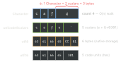
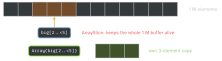

swift · folio
In one line: A Swift String is a UTF-8 buffer (since Swift 5)
seen as a bidirectional collection of Characters, where a
Character is an extended grapheme cluster — one user-perceived
character of variable byte width. Hence no s[3], count is
O(n), and slices (Substring, ArraySlice)
share and pin their parent’s storage. All stdlib collections are
value types with copy-on-write.
Download PDF Print view LaTeX source

One string, four views

"cafe\u{301}" ==
"caf\u{E9}" is true (canonical equivalence) though the
bytes differ. Family emoji: 1 Character, 7 scalars, 25 UTF-8 bytes, 11 UTF-16 units.
Strings
- Native storage is UTF-8; strings ≤ 15 UTF-8 bytes live inline (small-string, no heap) on 64-bit.
String.Indexis an opaque byte position.index(_:offsetBy:)is O(n). An index is valid only for the string it came from and until it mutates; never reuse it across strings or edits.isEmptyis O(1),countO(n) — nevercount == 0.s.utf8.countis O(1) for native strings.Substring(fromsplit,prefix, ranges) shares the whole base buffer:String(sub)before storing. Takesome StringProtocolto accept both.==,hasPrefix, hashing use canonical equivalence;<is not locale-aware — UI sort:localizedStandardCompare.
Example
let s = "cafe\u{301}" // "café", decomposed
s.count; s.unicodeScalars.count; s.utf8.count // 4, 5, 6
let i = s.index(s.startIndex, offsetBy: 3) // s[3] won't compile
s[i] // "é"
let first = log.split(separator: "\n")[0] // Substring
cache.append(String(first)) // copy out
var a = [Int](); a.reserveCapacity(n) // ONE allocation
let hit = big.lazy.map(f).first(where: p) // no temp array
var q = Deque<Job>(); q.prepend(job) // O(1) front
var seen: OrderedSet<ID> = []; seen.append(id) // unique, ordered
var pq = Heap<Int>(); pq.insert(5); pq.popMin() // O(log n)A slice pins its parent

Collections
- Array: one contiguous heap buffer;
appendamortised O(1) (capacity grows geometrically, ×2);reserveCapacity= one allocation. Mutation copies only if the buffer is shared (COW) — capacity ≠ uniqueness. - Set / Dictionary: open-addressed hash table, per-process random seed (SipHash, anti-HashDoS): average O(1), order unspecified and different every launch.
- Hashable contract:
a == b⇒ equal hashes. Feedhash(into:)exactly the fields==uses; never mutate a key while it is inside a Set/Dictionary. - Slices (
ArraySlice,Substring) keep the parent’s indices (a[5..<9].startIndex == 5) and its whole buffer alive. .lazyfusesmap/filterwith no temp arrays, but re-runs the closures on every iteration.
Complexity — pick the structure
| [i] | end + | front + | contains | order | |
|---|---|---|---|---|---|
Array | O(1) | O(1)* | O(n) | O(n) | insertion |
Set, Dictionary | — | O(1)* | — | O(1) avg | none |
Deque | O(1) | O(1)* | O(1)* | O(n) | insertion |
OrderedSet/Dict | O(1) | O(1)* | O(n) | O(1) | insertion |
Heap (min-max) | — | O(log n) | — | O(n) | min/max O(1) |
String | O(n) | O(1)* | O(n) | O(n) | — |
OrderedSet). swift-collections:
import Collections (or DequeModule, OrderedCollections,
HeapModule); also BitSet, TreeSet/TreeDictionary (persistent).
Traps
splitreturns[Substring]— store them and you keep the whole input alive.- Testing or persisting
Set/Dictionaryorder — it changes per launch. removeFirst()onArrayin a queue loop = O(n2) →Deque.- Iterating a slice with
0..<slice.count— useslice.indices. reserveCapacityinside the append loop defeats geometric growth.
Remember
“Graphemes cost a walk; slices hold the whole; hashes forget order.” Both ends → Deque · unique+ordered → OrderedSet · priority → Heap.